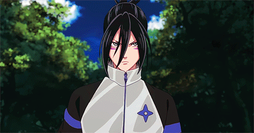
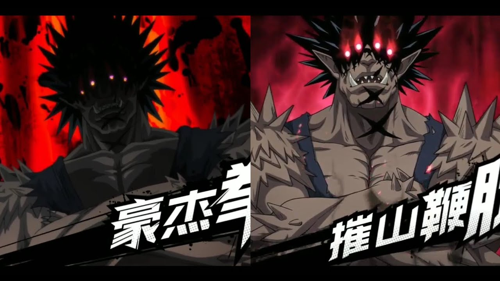
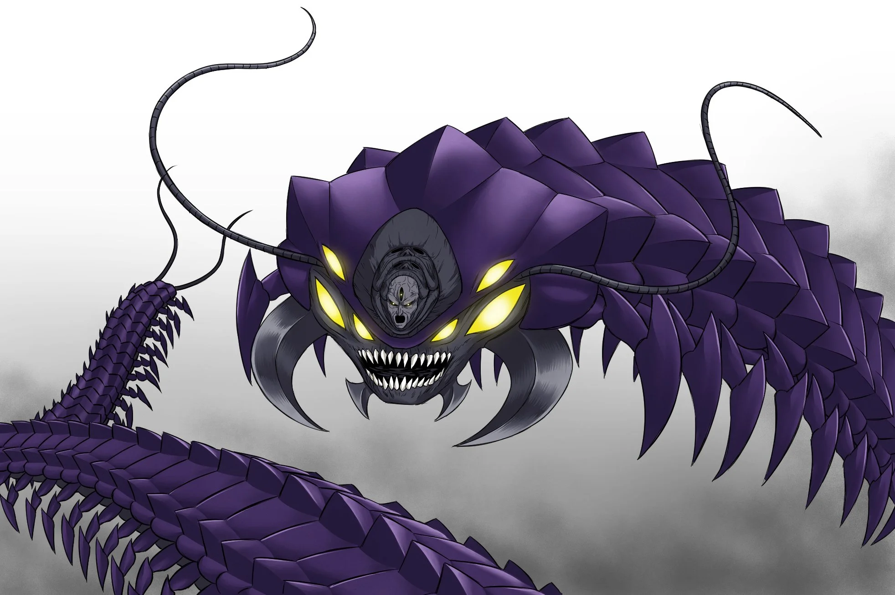

A ninja fast as the speed of the sound he is a recurring villain and occasional anti-hero. Sonic is also a self-declared eternal rival of Saitama. Sonic loves fighting, motivated by bloodlust against weak opponents, motivated by the thrill of battle and his superiority against strong opponents he can beat, and motivated by competition against a strong opponent he can't beat.

The Deep Sea King was a sadistic individual who enjoyed starting fights and inflicting pain upon others. He was determined to take the earth's surface for himself to rule. He regarded people as little more than food.

Ultimate martial artist Gouketsu was exceptionally calm, composed, and calculating, similar to a human. However, he also showcased the trademark cruelty and arrogance of a monster.Gouketsu is an executive member of the Monster Association. He was strong enough to win the first Super Fight as a human; and effortlessly defeated an S-Class hero

Unstoppable insect a gargantuan centipede creature. In the center of his head was an old, wrinkled, humanoid face. Elder Centipede nearly died in the past to the number one hero Blast so now, Elder Centipede holds a vicious grudge against him and would jump at any chance to get a rematch.

The Hero Hunter is a major adversary of the Hero Association and Monster Association. He is a former disciple of Bang but was expelled from his dojo for going on a rampage. Sitch of the Hero Association views him as a grave threat to the organization despite being only a human.